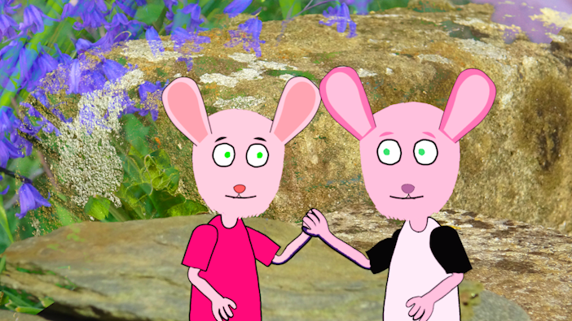

The Project


This project aims to help young children who have been diagnosed with serious or life-threatening illnesses understand the thoughts and feelings they may have towards their illness. This is done through a series of short animated videos.
The Videos
#1 Diagnosis
This video goes through some of the thoughts and feelings a child might have when newly diagnosed with an illness. It covers the idea that the child might think it's their fault and how they may feel sad, angry and/or scared. It offers resources and solutions to these feelings.

The Team
Ashleigh Kennedy
Lead Programmer, Character Designer, UX Designer"I came up for the initial idea of mental health videos aimed at ill children, based off of my own personal experiences with a serious illness in my youth. I worked on creating the assets used in Adobe Character Animator as well as the website."
Annabelle Greaves
Lead Designer, Writer"I came up for the initial idea of mental health videos aimed at ill children, based off of my own personal experiences with a serious illness in my youth. I worked on creating the assets used in Adobe Character Animator as well as the website."
Wiktor Rudolf
Lead Researcher, Lead Writer, Business Manager"I came up for the initial idea of mental health videos aimed at ill children, based off of my own personal experiences with a serious illness in my youth. I worked on creating the assets used in Adobe Character Animator as well as the website."
Benjamin Brown
Lead Animator, Audio Designer and Video Editor"I came up for the initial idea of mental health videos aimed at ill children, based off of my own personal experiences with a serious illness in my youth. I worked on creating the assets used in Adobe Character Animator as well as the website."